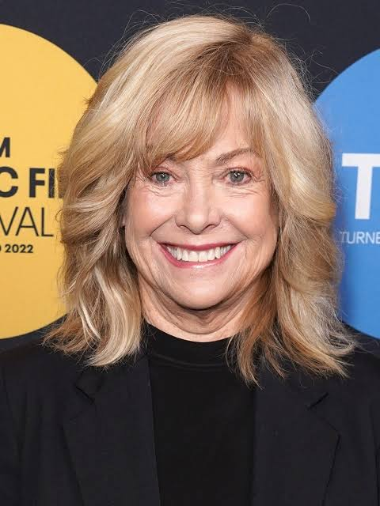
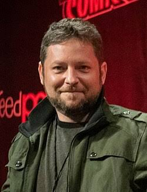
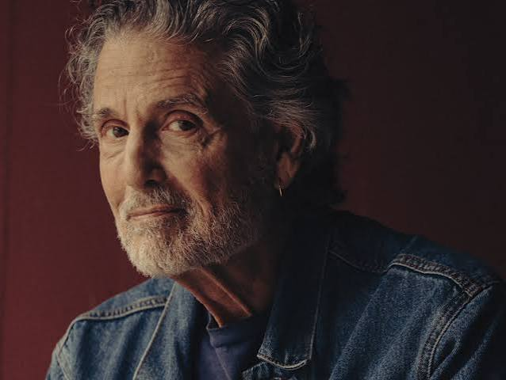
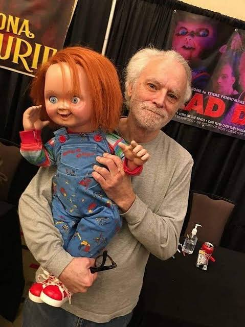

O filme do Chucky, no total, possui 8 filmes lançados, divididos entre a cronologia oficial clássica e um reboot independente. Além dos longas-metragens, o universo do boneco possui uma aclamada série de televisão
O elenco apresentado, será o mesmo que fez o primeiro filme "Boneco assasino" de 1988.
Catherine Hicks
Interpretou a mãe viúva que compra o boneco para o filho.

Alex Vincent
Interpretou o pequeno Andy, que se torna o alvo de Chucky.

Chris Sarandon
Interpretou o policial que persegue Charles Lee Ray e investiga os crimes.

Brad Dourif
Interpretou o Charles Lee Ray / Voz de Chucky — O assassino em série que transfere sua alma para o brinquedo.
